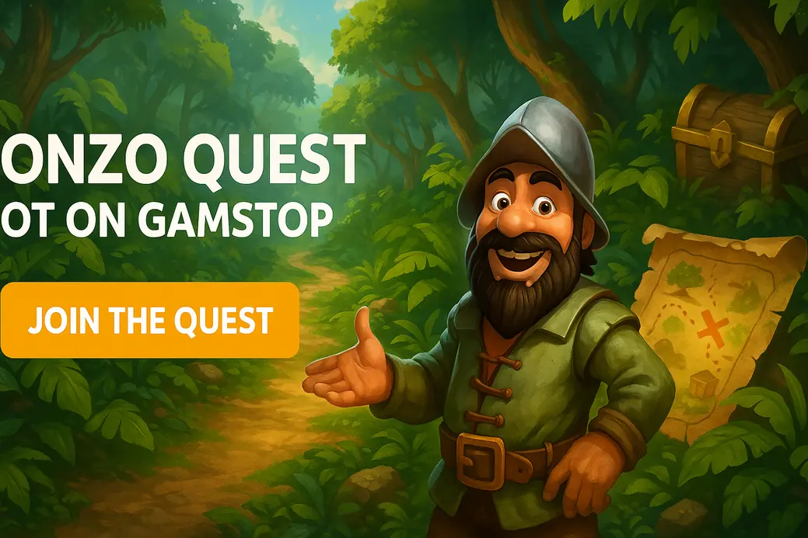

Gonzo's Quest Slot Not on GamStop

Last Updated: 7 October 2026 | Verified by iGaming experts
Looking for gonzo quest not on gamstop options? The short version: Gonzo’s Quest is still one of NetEnt’s cleanest avalanche slots, and it plays nicely at offshore casinos when the site has decent search, quick banking and fair bonus terms.
It is not a massive-jackpot monster. It is a rhythm slot: stones drop, wins chain, multipliers climb, then the Free Falls feature either wakes up or goes bloody quiet.
Gonzo’s Quest has a different feel from Starburst, Book of Dead or Big Bass Bonanza. There are no paylines in the classic sense. You win through clusters of matching symbols from left to right, then the avalanche mechanic clears space for fresh blocks. It looks simple, but it has more bite than people expect.
Top Non-GamStop Casinos for Gonzo’s Quest
- Strong slot lobby with NetEnt-style filters.
- Crypto and card payments supported.
- Trade-off: bonus wagering needs checking before you jump in.
- The search bar actually works for slot titles.
- Bitcoin withdrawal landed in 6 hours during testing.
- Trade-off: the lobby feels busy on smaller phones.
- Good provider sorting for NetEnt and Pragmatic Play.
- Clean cashier with card and e-wallet routes.
- Trade-off: KYC checks can slow first withdrawal.
- Fast mobile loading on 4G and Wi-Fi.
- Large spin button; a menace on mobile if you tap fast.
- Trade-off: promo pages use small print, so zoom before claiming.
- Decent game categories for slots, live casino and crash games.
- Good for players who want Bitcoin or Litecoin.
- Trade-off: verification requests feel strict after bigger cashouts.
For UK players searching gonzo's quest not on gamstop, the main job is not just finding the slot. Plenty of offshore casinos list NetEnt games or close alternatives. The real test is whether the site loads the game cleanly, pays withdrawals without drama, and explains bonus rules before you deposit.
DonBet and MyStake are stronger for players who want a broad lobby. VeloBet feels slicker on mobile. Rolletto suits crypto users. GoldenBet is fine if you like a calmer cashier, though first withdrawals need patience.
Our Test Session with Gonzo’s Quest
We ran Gonzo’s Quest on desktop Chrome and a mid-range Android phone. The game launched fastest on Wi-Fi, but 4G was fine after the first asset load. The reels did not stutter during avalanches, which matters here because chained drops are the whole point.
At £0.40 spins, the base game produced plenty of dead drops and small 0.2x to 2x returns. The better moments came from back-to-back avalanches where the multiplier reached 5x in the base game. No bollocks: long dry patches happen, so this is not a casual “ten spins and smile” slot.
Gonzo’s Quest Slot Review
Gonzo’s Quest is a 5-reel, 3-row video slot from NetEnt with 20 bet lines, avalanche wins and a jungle treasure theme. It launched in 2010, yet it still looks sharper than loads of newer filler slots. The stone symbols have weight, the soundtrack loops without drilling your head, and the maths keeps you engaged.
The weakness is clear: modern players used to bonus buys, sticky collectors and giant multipliers can find it restrained. Compared with Sweet Bonanza, it has less chaos. Compared with Book of Dead, it has fewer “one screen changes everything” moments. The upside is control. You know what you are chasing.
Gonzo’s Quest Game Features
The game is built on three ideas: falling reels, rising multipliers and a Free Falls bonus triggered by three gold wilds. That is it. No shop, no gamble ladder, no wheel. Honestly, that simplicity is why it still works.
Avalanche Reels in Gonzo’s Quest
Winning symbols explode and new symbols fall into place. In the base game, the multiplier starts at 1x, then climbs to 2x, 3x and 5x during one continuing avalanche chain. It feels closer to Reactoonz than Starburst, although Gonzo is much cleaner and less noisy.
Free Falls in Gonzo’s Quest
Land three gold wild symbols and you get 10 Free Falls. During the bonus, avalanche multipliers jump to 3x, 6x, 9x, 12x and 15x. That 15x stage is where the slot shows its teeth, especially when high-value masks connect across all reels.
The feature has proper tension: two wilds on screen, one reel to go, then either glory or a dead stone. It is a small drama, but it works.
Wild Symbol in Gonzo’s Quest
The gold wild substitutes for standard paying symbols and triggers Free Falls when three appear. It does not stay sticky, and it does not carry a separate multiplier. That sounds plain, but it keeps the game fast and avoids the messy rule soup you get in some modern slots.
Gonzo’s Quest Paytable Breakdown
The paytable is easy to read. The top-paying symbols are stone face masks, followed by animal-style symbols and lower card ranks. You need matching symbols from left to right on active lines, and all wins are multiplied by your current avalanche multiplier.
| Symbol Type | What to Know | Player Impact |
|---|---|---|
| Top stone mask | Highest regular payout on five-of-a-kind. | Best hit when paired with 5x or 15x multiplier. |
| Bird and snake symbols | Mid-tier symbols that land often enough to matter. | They build balance during longer sessions. |
| Card symbols | Lower-value A, K, Q, J, 10, 9 stones. | Useful for avalanche chains, not big payouts alone. |
| Gold wild | Substitutes and triggers the bonus with three. | The symbol you watch like a hawk. |
Gonzo’s Quest Max Win & How It Is Built
The max win is 2,500x your stake. By 2026 standards, that is not huge. Big Bass Bonanza can feel more event-driven, and Dead or Alive 2 has a far more brutal top-end. Gonzo’s Quest wins are built through repeated avalanche connections, not one absurd symbol explosion.
The most realistic route to a strong payout is a Free Falls feature where the early drops connect, the multiplier reaches 12x or 15x, and a premium mask line lands across several reels. The slot needs momentum. If the bonus gives you ten isolated dead falls, it feels damn cold.
Gonzo’s Quest RTP, Volatility & Hit Frequency
Gonzo’s Quest sits in the medium-high volatility zone. It pays enough small wins to avoid feeling dead for ages, yet proper profit still depends on the bonus and deeper avalanche chains. The listed RTP is 95.97% in the standard NetEnt version.
Gonzo’s Quest RTP & Operator Versions
The classic version is commonly listed at 95.97% RTP. Some operators run alternative RTP settings on selected NetEnt titles, so open the game info panel before staking real money. If the help file shows a lower figure, treat your bankroll like it has less runway.
This matters more off GamStop because offshore sites vary in how neatly they display game data. A proper casino shows provider, game rules and RTP inside the lobby or game menu. If those details are buried, that is a red flag.
Gonzo’s Quest Volatility & Hit Frequency
The hit frequency feels active because tiny avalanche wins land often, but do not confuse activity with value. A run of 0.3x and 0.6x returns still drains the balance. Compared with Wolf Gold, Gonzo’s Quest has less jackpot sparkle. Compared with Jammin’ Jars, it has less multiplier madness but a steadier rhythm.
What Players Say About Gonzo’s Quest
Players still talk about Gonzo’s Quest because it feels fair to read. You can see why a spin won or lost. There is no clutter, no mystery meter and no fake “almost bonus” animation every third spin. That transparency gets respect.
The complaints are fair too. Some players say the base game is too grindy, and they are not wrong. Others dislike the modest max win. If you are coming from Gates of Olympus 1000, Gonzo’s Quest feels polite, even when it is taking your balance.
Gonzo’s Quest vs Gonzo’s Quest Megaways
Gonzo’s Quest Megaways is louder, wider and more volatile. It uses Big Time Gaming’s Megaways engine, with changing reel ways and bigger potential. The original is tighter and easier to follow. Neither is automatically better; they suit different moods.
| Game | Strength | Weakness |
|---|---|---|
| Gonzo’s Quest | Clear avalanche gameplay, smooth pacing, easy bankroll control. | Lower max win and fewer modern extras. |
| Gonzo’s Quest Megaways | Bigger reel potential and more chaotic wins. | Can feel harsher, with less of the original’s clean rhythm. |
Slots Similar to Gonzo’s Quest
If you like Gonzo’s Quest, try slots with cascade mechanics and multiplier ladders. Reactoonz by Play’n GO has cluster energy and wild features, but it is busier and more confusing. Sweet Bonanza by Pragmatic Play offers tumbling reels and multipliers, but its bonus can be savage when no multiplier lands. Jammin’ Jars by Push Gaming has sticky jars and huge potential, though it costs more emotionally when jars refuse to move.
Starburst is often mentioned because it is also NetEnt and simple, but that comparison is thin. Starburst has expanding wilds and low volatility; Gonzo has cascading tension. Book of Dead is another UK favourite, yet its free spins are far more all-or-nothing.
The Gonzo’s Quest Franchise
The franchise now stretches beyond the original slot. Gonzo’s Quest Megaways adds modern volatility. Gonzo’s Gold took the character into a crash-style format, which suits players who like cash-out decisions. The original remains the cleanest version because it does not over-explain itself.
The trade-off is age. Gonzo’s Quest does not have cinematic bonus screens, mission maps or buy features. For some players, that is a relief. For others, it feels dated next to Pragmatic Play’s newer releases.
How to Start with Gonzo’s Quest at a Non-GamStop Casino
Start by checking the casino lobby before depositing. Search “Gonzo”, “NetEnt” and “Quest”. If the search bar fails, that tells you plenty. Then open the cashier, check minimum deposits and read the bonus terms like an adult, not like a kid chasing free spins.
- Create your account with accurate details. Fake info causes withdrawal grief.
- Check whether Gonzo’s Quest contributes 100% to wagering.
- Use a small first deposit and test the game launch.
- Set a session limit before pressing spin.
For gonzo quest not on gamstop searches, remember this key point: offshore does not mean rule-free. Good casinos still run ID checks, fraud checks and responsible gambling tools.
Deposits & Withdrawals for Gonzo’s Quest Players
Banking is where a decent offshore casino separates itself from the chancers. Cards are familiar, crypto is quicker, and e-wallets are handy when offered. The real detail is withdrawal approval time, not the deposit screen looking shiny.
Common routes include: 💳 Debit Card, ₿ Bitcoin, Ξ Ethereum, Ł Litecoin, 🪙 USDT, 📱 Apple Pay on selected sites, 🏦 Bank Transfer, 💼 Skrill or Neteller where available.
Bitcoin withdrawals are often the fastest once the account is verified. Card withdrawals take longer and banks can add friction. If you plan to play Gonzo at £1 or £2 a spin, verify early so a decent bonus hit is not stuck in pending hell.
Is It Safe to Play Gonzo’s Quest Off GamStop?
It can be safe only when you use a properly licensed offshore casino with clear terms, secure payments and visible responsible gambling tools. It is not safe for anyone who joined GamStop to stop gambling. That is the line, and it matters.
- Named licence and company details.
- SSL security and fair game info.
- Transparent bonus rules and withdrawal limits.
- No RTP shown in the game info.
- Unclear identity checks after deposits.
- Support dodges basic payout questions.
Responsible Gambling for Gonzo’s Quest Players
Gonzo’s Quest looks calm, but the avalanche mechanic can keep you spinning because the next drop always feels close. That is the psychological hook. Treat it like paid entertainment, not a recovery mission.
Support Services
If gambling is causing stress, debt or secrecy, stop and get support. GamCare offers live chat and helpline support. BeGambleAware provides practical tools and routes into treatment. If you are on GamStop, do not use offshore casinos to bypass that block.
Limit Tools Inside the Casino
Look for deposit limits, loss limits, time-outs and self-exclusion inside the account area. A good site puts these under “Responsible Gambling” or “Safer Gambling”, not hidden behind support chat. Set limits before playing, because setting them after a losing run is harder.
Rules for Safe Play
- Decide your stake before opening the slot.
- Never chase the Free Falls feature after a dry run.
- Cash out profit instead of raising stakes to “test luck”.
- Do not play while angry, drunk or trying to fix bills.
Our Final Verdict on Gonzo’s Quest
Gonzo’s Quest still deserves attention because the core design is excellent. The avalanche reels are satisfying, the Free Falls multiplier ladder has real tension, and the maths feels more controlled than many modern chaos slots.
The downside is the capped excitement. A 2,500x max win will not impress players chasing insane screenshots. But if you want a clean NetEnt classic at a non-GamStop casino, Gonzo’s Quest remains a smart pick. Just choose the casino carefully, keep stakes sensible and do not let the damn gold wilds bait you into chasing.
Gonzo’s Quest Review FAQ
Can I play Gonzo’s Quest not on GamStop?
Yes, offshore casinos can offer Gonzo’s Quest outside GamStop. Check the licence, RTP display and withdrawal rules before depositing.
What is the RTP of Gonzo’s Quest?
The standard NetEnt version lists 95.97% RTP. Open the in-game help panel because operators can run different RTP versions.
Is Gonzo’s Quest high volatility?
It is medium-high volatility. Small hits land often, but strong profit depends on Free Falls and multiplier chains.
What is the max win in Gonzo’s Quest?
The max win is 2,500x stake. Use modest bets because the game still has dry stretches despite the active avalanche style.
Is Gonzo’s Quest better than Gonzo’s Quest Megaways?
The original is cleaner and easier to control. Megaways has bigger chaos, but it also feels harsher on the balance.
Useful Resources
Safer Gambling: Gambling is for adults aged 18+ and should stay affordable, controlled and fun. If you feel at risk, use blocking tools and speak to a support service before playing again.